环境与系统¶
Linux / WSL¶
Linux 是数据科学和机器学习的事实标准运行环境。Windows 用户可以通过 WSL（Windows Subsystem for Linux）在不装双系统的情况下获得完整的 Linux 体验。
- WSL 安装指南：微软官方文档
- 推荐发行版：Ubuntu
Miniconda 安装与环境配置¶
Conda 是 Python 生态的包管理和环境隔离工具，能避免不同项目之间的依赖冲突。推荐安装 Miniconda 而非 Anaconda——后者体积大、预装包多，不利于按需定制。
下载与安装¶
从官网下载 Miniconda 安装包：Anaconda 官网
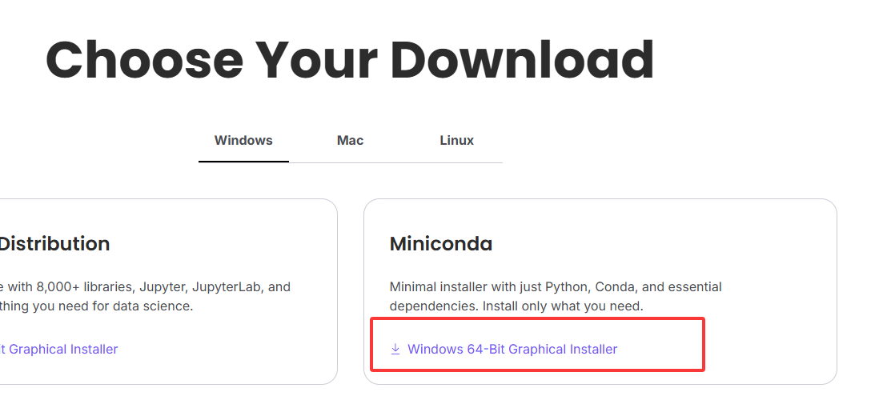
右键以管理员身份运行安装包：
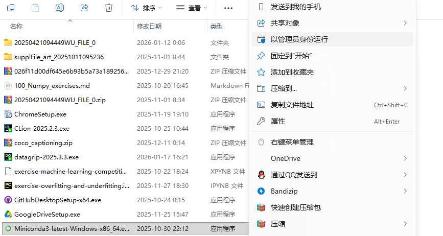
安装类型选择 Just Me（仅为当前用户安装）：
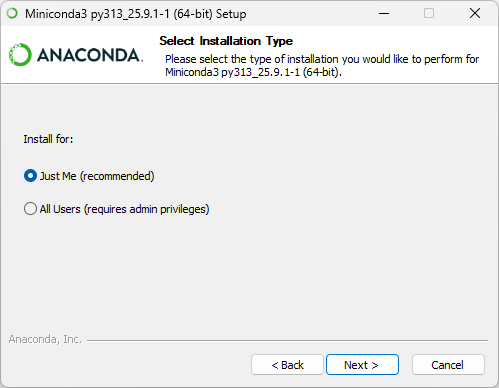
安装路径建议选 D 盘的一个新文件夹。注意：C 盘用户名如果是中文，一定不要装在 C 盘（路径编码问题会导致后续各种报错）。
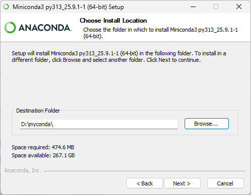
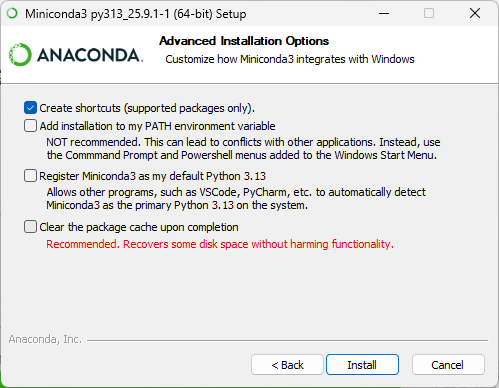
配置环境变量¶
安装完成后，需要将 Conda 添加到系统环境变量，才能在终端中使用 conda 命令。
在系统设置中搜索「环境变量」：
点击「环境变量」：
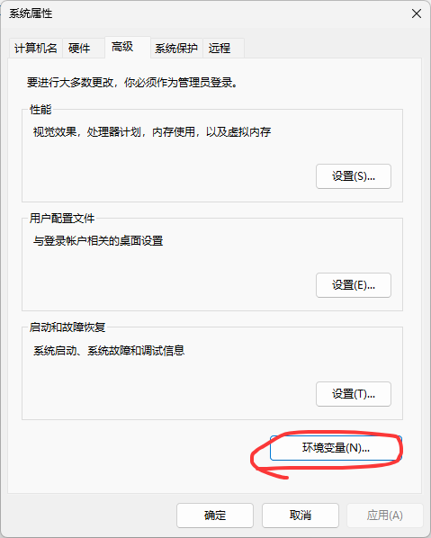
选中 Path，点击编辑：
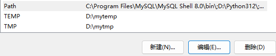
将 Miniconda 安装目录下的 condabin 文件夹路径添加到 Path 中（例如 D:\miniconda3\condabin）：
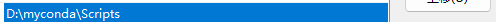
验证安装¶
按 Win + R，输入 cmd 打开终端，输入：
conda --version
出现版本号就说明安装成功了。
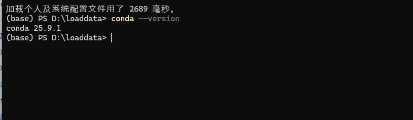
虚拟环境管理¶
终端里命令行前面有一个 (base)，这表示当前处于 Conda 的基础环境。实际开发中，不同项目可能需要不同的 Python 版本和依赖包——Conda 的虚拟环境正是用来解决这个问题的。你可以把虚拟环境理解为相互独立的开发空间。
创建环境¶
创建一个名为 myenv、Python 版本为 3.10 的环境：
conda create -n myenv python=3.10
出现以下提示就创建成功了：
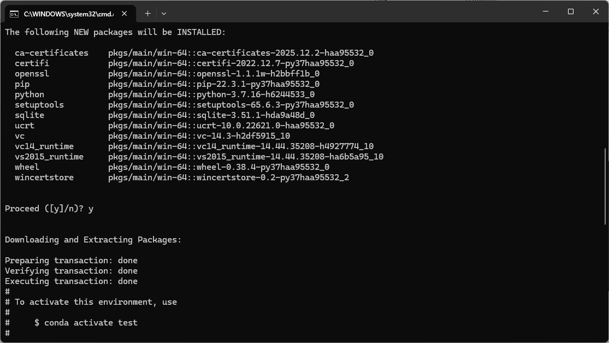
激活与退出环境¶
激活环境：
conda activate myenv
进入环境后，安装需要的 Python 包：
conda install numpy pandas matplotlib scikit-learn seaborn xgboost
退出当前环境：
conda deactivate
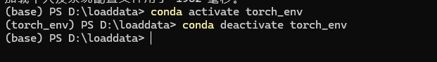
删除不需要的环境¶
conda remove -n myenv --all
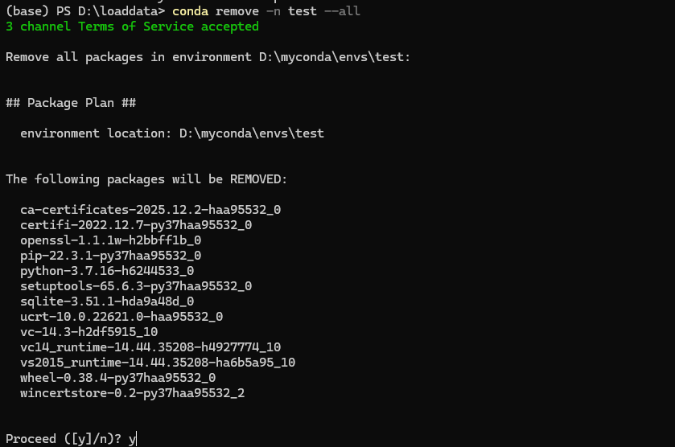
PyTorch 安装¶
PyTorch 的安装需要根据自己电脑的 GPU 情况来选版本。
首先确认显卡驱动和 CUDA 版本：
nvidia-smi
关注输出中的 CUDA 版本号：
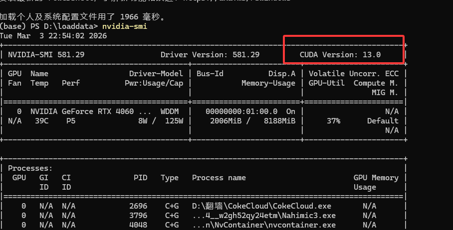
然后到 PyTorch 官网 选择对应版本，复制安装指令：
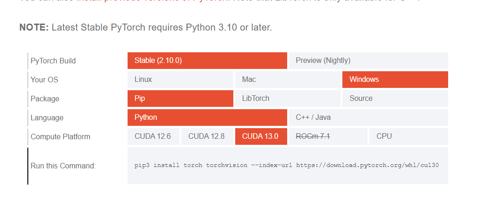
在目标环境中执行（以 CUDA 13.0 为例）：
pip3 install torch torchvision --index-url https://download.pytorch.org/whl/cu130
如果没有 NVIDIA 显卡，可以前往阿里云领取免费大学生服务器，通过 SSH 连接远程服务器进行 GPU 编程。
Miniconda 官网：docs.anaconda.com/miniconda